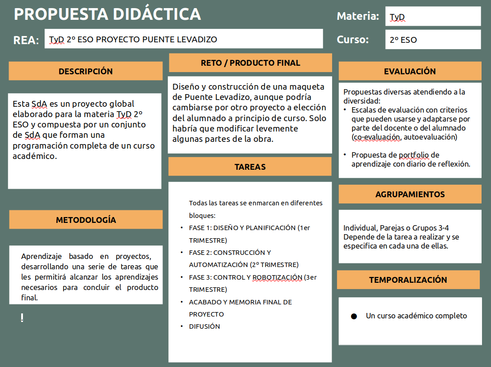
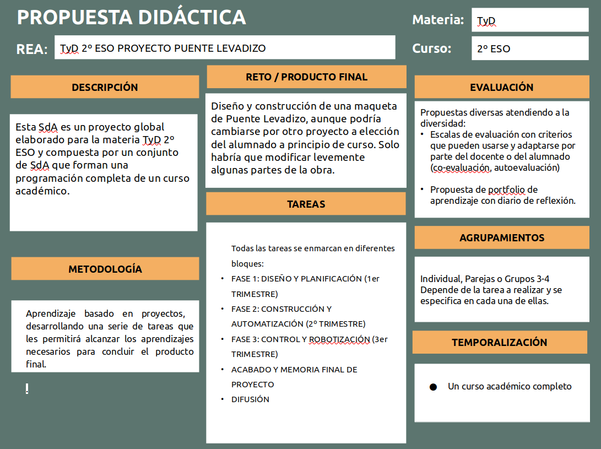

Resumen del proyecto


Será el profesorado quien decida tanto sobre el desarrollo del proyecto como sobre la adaptación de la propuesta a la realidad de su aula. El recurso puede utilizarse en toda su extensión, siguiendo la dinámica planteada de manera completa, o bien seleccionar alguna tarea que será realizada de manera independiente ya que la estructura modular del recurso así lo permite.
En cualquier caso, las aquí expuestas son unas pautas básicas que pueden ser tenidas en cuenta.
La presentación del proyecto al alumnado es una fase importante para el éxito del mismo ya que consigue mejorar la motivación e implicación del alumnado en el desarrollo de las tareas. Saber qué se hace y por qué es condición necesaria para el adecuado desarrollo del aprendizaje.
Desde el punto de vista de un aprendizaje activo en el que el alumnado es protagonista de su propio aprendizaje la reflexión sobre el mismo es una condición inexcusable. En alguna de las tareas se incluyen pautas a modo de rutinas de pensamiento para favorecer la metacognición.
El profesorado debe ayudar al alumnado a gestionar de manera adecuada el diario de aprendizaje, que es la herramienta propuesta para desarrollar la autorregulación.
Para ello, es importante:
Es imprescindible que los alumnos y alumnas, como protagonistas del proceso de aprendizaje, puedan evaluar la experiencia del proyecto y lo que han aprendido. Para ello, se incluye una herramienta específica que es el diario de aprendizaje. No hay que olvidar:
La interacción es uno de los motores del aprendizaje. Introducir el diálogo entre iguales en el aula es esencial para asegurar la correcta comprensión de las informaciones y las tareas que se van a desarrollar. Por otro lado, la interacción entre iguales, basada en la ayuda mutua, favorece la participación de todo el alumnado y el tratamiento de la diversidad.
En esta etapa de la ESO tiene especial importancia fomentar actitudes positivas hacia el trabajo en equipo. En las tareas del proyecto se plantean, a menudo, actividades que exigen la puesta en práctica de técnicas de trabajo cooperativo.
La diferencia de niveles de desarrollo de la competencia digital tanto en el alumnado como en el profesorado es una realidad en las aulas. Sin embargo, es indispensable que este proponga el uso de la red en las actividades de aprendizaje del proyecto utilizando las herramientas y recursos propuestos.
Con relación al alumnado, además de la utilización adecuada de la red, es necesario promover aspectos relacionados con la competencia digital como:
Obra publicada con Licencia Creative Commons Reconocimiento Compartir igual 4.0